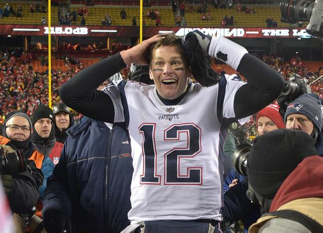

Tom Brady
“Sleep is all about recovering. So if you're not sleeping, you're not recovering. And if you're going to break your body down a lot, you better find ways to build it back up. And the only way to do that is get a lot of sleep. So for me, I go to bed at like 8:30, 9:00. As soon as I put my kids to bed. Because I'm up at 5:30 the next day. ”- Tom Brady
"I think my style is more of a classic look"
- Tom Brady
"I just love working hard. I love being part of a team; I love working toward a common goal."
- Tom Brady
If I feel anxious every time someone is staring at me, well, I can't control what they stare at, but my reaction is, I'm just not going to go outside the house. I'm going to stay in and chill. And when I do go out, I understand what comes along with that."
- Tom Brady
"I like Tom Ford alot because it's so classic and has great quality. I wear alot of Rag & Bone"
- Tom Brady

Tom Brady celebrating after earning his 9th SuperBowl trip
Why He's a Square
- He's Subservient to Bill Belicheck.
- He has been in the public eye for 19 years and still never said anything interesting
- He adheres to an unrelenting diet, sleep, and excercise regimient
- Even when he (allegedly) cheats it's something as lame as deflating footballs
- In a league with Vikings, Raiders, and Buccanears; He plays for the Patriots
- He's goodlooking enough to still be charming, despite a complete lack of unique personality traits
Heroic Achievements
Started 10-0 in NFL Playoffs and won 3 SuperBowls
2001
Brady returned from his knee injury in the AFC Championship Game to start in the Super Bowl a week later at the Louisiana Superdome in New Orleans. Despite being heavy underdogs, the Patriots played well, holding the Rams' high powered offense in check through the first three quarters. The Rams rallied from a 17–3 deficit to tie the game with 1:30 left in regulation. The Patriots then got the ball back at their own 17-yard line with no timeouts remaining. Sportscaster and former Super Bowl-winning coach John Madden said he thought the Patriots should run out the clock and try to win the game in overtime. Instead, Brady drove the Patriots' offense down the field to the Rams' 31-yard line before spiking the ball with seven seconds left. Kicker Adam Vinatieri converted a 48-yard field goal as time expired to give the Patriots a 20–17 win and their first ever league championship. Brady was named MVP of Super Bowl XXXVI while throwing for 145 yards, one touchdown, and no interceptions. At the age of 24 years and six months, Brady surpassed Joe Namath in Super Bowl III and Joe Montana in Super Bowl XVI, who were both 25 years, seven months, and 13 days old at the time of their victories, to earn the title of youngest quarterback to win a Super Bowl. A possible quarterback controversy was averted when Bledsoe was traded to the Buffalo Bills during the offseason; this event cemented Brady's status as the starting quarterback.
2003
In the first two rounds of the playoffs, the Patriots defeated the Tennessee Titans in the Divisional Round by a score of 17–14. In the win, Brady was 21 of 41 for 201 passing yards and one passing touchdown. In the following round, they defeated Indianapolis Colts in the AFC Championship by a score of 24–14. Brady completed 22 of 37 passes for 237 yards, one passing touchdown, and an interception. On February 1, 2004, Brady led the Patriots to a 32–29 victory over the NFC champion Carolina Panthers in Super Bowl XXXVIII and was named Super Bowl MVP for the second time. During the game, Brady threw for 354 yards with three touchdowns and set the record for most completions by a quarterback in a Super Bowl with 32. With 1:08 left in the fourth quarter and the score tied 29–29, Brady engineered a drive with five pass completions to put the Patriots in position for the game-winning 41-yard field goal by Vinatieri.
2004
In the playoffs, Brady led the Patriots to victories over the Indianapolis Colts in the Divisional Round by a score of 20–3 and the Pittsburgh Steelers in the AFC Championship by a score of 41–27. Brady played his best game of the year in Pittsburgh despite requiring intravenous treatment the previous night when he ran a temperature of 103°. Against the NFL's best defense, he recorded a quarterback passer rating of 130.5, his highest of the season. On February 6, 2005, the Patriots narrowly defeated the Philadelphia Eagles, 24–21, to win Super Bowl XXXIX at Alltel Stadium in Jacksonville, Florida. Brady threw for 236 yards and two touchdowns while capturing the Patriots' third championship in four years. They became the first franchise since the Dallas Cowboys in 1992–1995 to win three Super Bowls in four years
Beat the Seahawks in to end a 10 year SuperBowl drought
Ten years removed from his last Super Bowl win, Tom Brady wasn't letting this one slip away. Sure, the brilliant Brady needed a huge play by an undrafted rookie to preserve New England's 28-24 Super Bowl victory over Seattle on Sunday night.
But Brady's imprint was all over the Patriots' sensational fourth-quarter rally for their fourth NFL championship of the Brady-Bill Belichick era.
"You know, whatever it takes," the record-setting Brady said after throwing for four touchdowns, including a 3-yarder to Julian Edelman with 2:02 remaining as New England rallied from a 10-point deficit. "Every team has a journey and a lot of people lost faith in us ... but we held strong, we held together, and it's a great feeling." The Patriots (15-4) had to survive a last-ditch drive by the Seahawks (14-5), who got to the 1, helped by a spectacular juggling catch by Jermaine Kearse. Then Malcolm Butler stepped in front of Ricardo Lockette to pick off Russell Wilson's pass and complete one of the wildest Super Bowl finishes. Brady leaped for joy on the Patriots sideline after Butler's first career interception.
Married Gisele Bündchen
(she makes more than twice as much money as him... just thought it was worth mentioning)
Brady began dating Brazilian supermodel Gisele Bündchen in December 2006. In 2009, Brady said they had been set up on a blind date by a mutual friend. Brady and Bündchen married on February 26, 2009, in an intimate Catholic ceremony in Santa Monica, California. Together, they have two children: a son named Benjamin Rein born in December 2009, and a daughter named Vivian Lake born in December 2012.